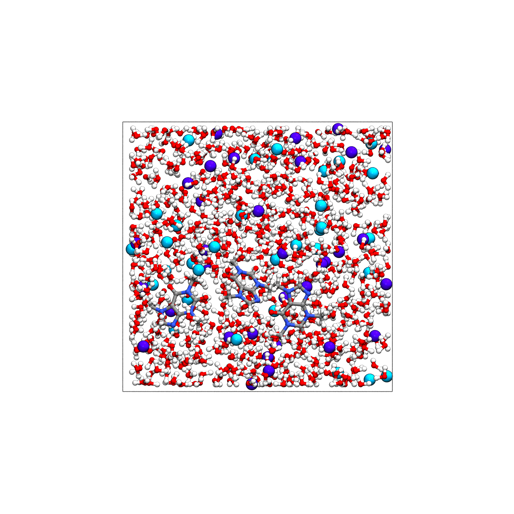

Tutorial: Solvating Caffeine Molecules in Saline Water with SolutionBuilder#
This tutorial demonstrates how to build a solvated system containing 3 caffeine
molecules in a sodium chloride ($text{Na}^+$ and $text{Cl}^-$) aqueous solution
using CEMD and the SolutionBuilder blueprint class.
Prerequisites#
from cemd import AtomicSystem
from cemd.builders import SolutionBuilder
Step 1: Retrieve Caffeine Molecule from PubChem and set the topology#
Fetch the 3D chemical structure of caffeine directly from the PubChem database:
# Retrieve caffeine 3D structure from PubChem
caffeine = AtomicSystem.from_pubchem()
? Enter name or formula: caffeine
Searching for 'caffeine' on PubChem...
Found 2 structures [1/2]
↑↓ Move [Enter] Load [p] PubChem page [q] Quit
ID | NAME | FORMULA | WEIGHT
----------------------------------------------------------------------------
➜ 2519 | Caffeine | C8H10N4O2 | 194.19
2519 | caffeine | C8H10N4O2 | 194.19
caffeine.summary()
<AtomicSystem with 24 atoms, 25 bonds>
Box
a (Å) b (Å) c (Å) α (°) β (°) γ (°)
17.33 16.36 11.80 90.00 90.00 90.00
Atoms
type number mass charge
C 8 12.010780 0.0
H 10 1.007947 0.0
N 4 14.006720 0.0
O 2 15.999430 0.0
Bonds
type number
C-C 2
C-H 10
C-N 11
C-O 2
Total charge: 0.000 e
Volume: 3.35 nm³
Density: 0.10 g/cm³
Guess the angles, dihedrals and impropers from the bonds
caffeine.guess_connections()
print(caffeine)
<AtomicSystem with 24 atoms, 25 bonds, 43 angles, 54 dihedrals, 8 impropers>
Step 2: Configure the Solution Blueprint#
Define the composition of the solution. We want exactly 3 caffeine molecules, 10 $text{Na}^+$ ions, and 10 $text{Cl}^-$ ions immersed in water with a target density of $1.0text{ g/cm}^3$.
# Create the solution blueprint using explicit molecule counts
builder = SolutionBuilder.from_counts(
density=1.0,
counts={
"caffeine": 3,
"Na": 10,
"Cl": 10,
},
structures={
"caffeine": caffeine,
},
)
print(bluider)
Expected output:
<SolutionBuilder>
┌─ Composition
│ density: 1.00 g/cm³
│ type: molarities
│ Na: 2.000 M
│ Cl: 2.000 M
│
├─ Custom structures
│ caffeine: 24 atoms
Step 3: Build the Solvated System#
Generate the solution inside a cubic simulation box of size $30 times 30 times 30text{ AA}$. The builder automatically calculates the required number of water molecules based on the volume, solute mass, and target density.
# Build the 3D solution box
solvated_system = builder.build(box=[30.0, 30.0, 30.0])
print(solvated_system)
Expected output:
<AtomicSystem with 2427 atoms, 1601 bonds, 892 angles, 162 dihedrals, 24 impropers>
Step 4: Visualize and Export the System#
Inspect the generated system and export it to a standard file format:
# Visualize the solvated system
solvated_system.view()
# Save the system to a LAMMPS data file
solvated_system.write("solvated_caffeine.data")
{kind=link}
